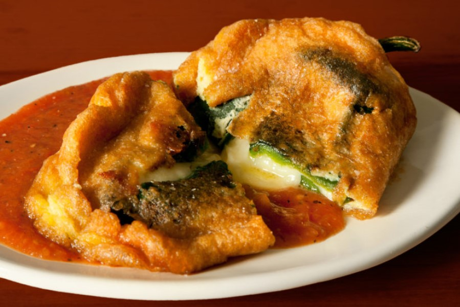

New Mexican chile rellenos

Description
For our main course, let's sample a New Mexican delicacy. This version was inspired by a restaurant called Nellie's Café in Las Cruces, New Mexico.
Ingredients
- 12 oz (about 3 cups) shredded cheese, preferably Monterey jack cheese or asadero, shredded
- 12 whole roasted large New Mexican green chiles, slit from end to end
- 6 large eggs, separated
- ½ cup all-purpose flour
- ¾ teaspoon salt
- Vegetable oil or shortening for deep frying
- 1 cup all-purpose flour
- Green chile sauce, warmed
Steps
- With your fingers, stuff each chile with cheese, filling them well but not to overflowing.
- Preheat oven to 400 degrees Fahrenheit.
- To prepare the batter, beat the egg whites in a large bowl with an electric mixer until soft peaks form. Mix in the egg yolks, the ½ cup flour, and salt, beating only until combined. Note the batter should be lightly stiff and thick enough to coat the chiles.
- Heat 4 inches of oil in a large heavy pan to 350° F. Place a baking rack over a few thicknesses of paper towels within easy reach of the stovetop.
- Pour 1 cup of flour out on a plate. Lay the first chile, seam-side up, in the flour to coat, using a spoon to cover it thoroughly.
- Dunk the chile into the batter, seam-side up, and spoon more batter over it. When evenly coated, pull it from the batter by its stem and let any excess batter drip back into the bowl. No cheese should show—the batter should be thick enough to seal the chile's slit.
- Slip the chile into the oil and repeat with the remaining chiles as you have room in the pan.
- Fry the chiles for about 4 to 5 minutes, turning as needed to fry them until evenly golden and crisp. Drain the chiles on the baking rack.
- Transfer the chiles to a heatproof platter or individual plates, then top with chile sauce and cheese. Pop in the oven for about 3 minutes, until the cheese on top has melted. Serve immediately.